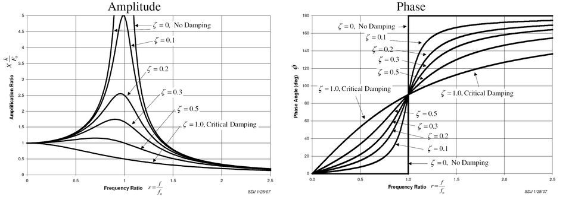

The original, as published: Wikipedia contributors, Vibration. CC BY-SA 4.0, https://creativecommons.org/licenses/by-sa/4.0/. As published, from https://en.wikipedia.org/wiki/Vibration https://en.wikipedia.org/wiki/Vibration
In mechanics, vibration (from Latin vibrāre 'to shake') is an oscillation of matter about an equilibrium point. Vibration may be deterministic if the oscillations can be characterised precisely (e.g. the periodic motion of a pendulum), or random if the oscillations can only be analysed statistically (e.g. the movement of a tire on a gravel road).
Vibration can be desirable: for example, the motion of a tuning fork, the reed in a woodwind instrument or harmonica, a mobile phone, or the cone of a loudspeaker. In many cases, however, vibration is undesirable, wasting energy and creating unwanted sound. For example, the vibrational motions of engines, electric motors, or any mechanical device in operation are typically unwanted. Such vibrations could be caused by imbalances in the rotating parts, uneven friction, or the meshing of gear teeth. Careful designs usually minimize unwanted vibrations.
The studies of sound and vibration are closely related (both fall under acoustics). Sound, or pressure waves, are generated by vibrating structures (e.g. vocal cords); these pressure waves can also induce the vibration of structures (e.g. ear drum). Hence, attempts to reduce noise are often related to issues of vibration.
Machining vibrations are common in the process of subtractive manufacturing.
Free vibration or natural vibration occurs when a mechanical system is set in motion with an initial input and allowed to vibrate freely. Examples of this type of vibration are pulling a child back on a swing and letting it go, or hitting a tuning fork and letting it ring. The mechanical system vibrates at one or more of its natural frequencies and damps down to motionlessness.
Forced vibration is when a time-varying disturbance (load, displacement, velocity, or acceleration) is applied to a mechanical system. The disturbance can be a periodic and steady-state input, a transient input, or a random input. The periodic input can be a harmonic or a non-harmonic disturbance. Examples of these types of vibration include a washing machine shaking due to an imbalance, transportation vibration caused by an engine or uneven road, or the vibration of a building during an earthquake. For linear systems, the frequency of the steady-state vibration response resulting from the application of a periodic, harmonic input is equal to the frequency of the applied force or motion, with the response magnitude being dependent on the actual mechanical system.
Damped vibration: When the energy of a vibrating system is gradually dissipated by friction and other resistances, the vibrations are said to be damped. The vibrations gradually reduce or change in frequency or intensity or cease and the system rests in its equilibrium position. An example of this type of vibration is the vehicular suspension dampened by the shock absorber.
Vibration isolation is the prevention of transmission of vibration from one component of a system to other parts of the same system, as in buildings or mechanical systems. Vibration is undesirable in many domains, primarily engineered systems and habitable spaces, and methods have been developed to prevent the transfer of vibration to such systems. Vibrations propagate via mechanical waves and certain mechanical linkages conduct vibrations more efficiently than others. Passive vibration isolation makes use of materials and mechanical linkages that absorb and damp these mechanical waves. Active vibration isolation involves sensors and actuators that produce disruptive interference that cancels-out incoming vibration.
Vibration testing is accomplished by introducing a forcing function into a structure, usually with some type of shaker. Alternately, a DUT (device under test) is attached to the "table" of a shaker. Vibration testing is performed to examine the response of a device under test (DUT) to a defined vibration environment. The measured response may be ability to function in the vibration environment, fatigue life, resonant frequencies or squeak and rattle sound output (NVH). Squeak and rattle testing is performed with a special type of quiet shaker that produces very low sound levels while under operation.
For relatively low frequency forcing (typically less than 100 Hz), servohydraulic (electrohydraulic) shakers are used. For higher frequencies (typically 5 Hz to 2000 Hz), electrodynamic shakers are used. Generally, one or more "input" or "control" points located on the DUT-side of a vibration fixture is kept at a specified acceleration. Other "response" points may experience higher vibration levels (resonance) or lower vibration level (anti-resonance or damping) than the control point(s). It is often desirable to achieve anti-resonance to keep a system from becoming too noisy, or to reduce strain on certain parts due to vibration modes caused by specific vibration frequencies.
The most common types of vibration testing services conducted by vibration test labs are sinusoidal and random. Sine (one-frequency-at-a-time) tests are performed to survey the structural response of the device under test (DUT). During the early history of vibration testing, vibration machine controllers were limited only to controlling sine motion so only sine testing was performed. Later, more sophisticated analog and then digital controllers were able to provide random control (all frequencies at once). A random (all frequencies at once) test is generally considered to more closely replicate a real world environment, such as road inputs to a moving automobile.
Most vibration testing is conducted in a 'single DUT axis' at a time, even though most real-world vibration occurs in various axes simultaneously. MIL-STD-810G, released in late 2008, Test Method 527, calls for multiple exciter testing. The vibration test fixture used to attach the DUT to the shaker table must be designed for the frequency range of the vibration test spectrum. It is difficult to design a vibration test fixture which duplicates the dynamic response (mechanical impedance) of the actual in-use mounting. For this reason, to ensure repeatability between vibration tests, vibration fixtures are designed to be resonance free within the test frequency range. Generally for smaller fixtures and lower frequency ranges, the designer can target a fixture design that is free of resonances in the test frequency range. This becomes more difficult as the DUT gets larger and as the test frequency increases. In these cases multi-point control strategies can mitigate some of the resonances that may be present in the future.
Some vibration test methods limit the amount of crosstalk (movement of a response point in a mutually perpendicular direction to the axis under test) permitted to be exhibited by the vibration test fixture. Devices specifically designed to trace or record vibrations are called vibroscopes.
Vibration analysis (VA), applied in an industrial or maintenance environment aims to reduce maintenance costs and equipment downtime by detecting equipment faults. VA is a key component of a condition monitoring (CM) program, and is often referred to as predictive maintenance (PdM). Most commonly VA is used to detect faults in rotating equipment (Fans, Motors, Pumps, and Gearboxes etc.) such as imbalance, misalignment, rolling element bearing faults and resonance conditions.
VA can use the units of Displacement, Velocity and Acceleration displayed as a time waveform (TWF), but most commonly the spectrum is used, derived from a fast Fourier transform of the TWF. The vibration spectrum provides important frequency information that can pinpoint the faulty component.
The fundamentals of vibration analysis can be understood by studying the simple Mass-spring-damper model. Indeed, even a complex structure such as an automobile body can be modeled as a "summation" of simple mass–spring–damper models. The mass–spring–damper model is an example of a simple harmonic oscillator. The mathematics used to describe its behavior is identical to other simple harmonic oscillators such as the RLC circuit.
Note: This article does not include the step-by-step mathematical derivations, but focuses on major vibration analysis equations and concepts. Please refer to the references at the end of the article for detailed derivations.
To start the investigation of the mass–spring–damper assume the damping is negligible and that there is no external force applied to the mass (i.e. free vibration). The force applied to the mass by the spring is proportional to the amount the spring is stretched "x" (assuming the spring is already compressed due to the weight of the mass). The proportionality constant, k, is the stiffness of the spring and has units of force/distance (e.g. lbf/in or N/m). The negative sign indicates that the force is always opposing the motion of the mass attached to it:
The force generated by the mass is proportional to the acceleration of the mass as given by Newton's second law of motion:
The sum of the forces on the mass then generates this ordinary differential equation:
Assuming that the initiation of vibration begins by stretching the spring by the distance of A and releasing, the solution to the above equation that describes the motion of mass is:
This solution says that it will oscillate with simple harmonic motion that has an amplitude of A and a frequency of fn. The number fn is called the undamped natural frequency. For the simple mass–spring system, fn is defined as:
Note: angular frequency ω (ω=2 π f) with the units of radians per second is often used in equations because it simplifies the equations, but is normally converted to ordinary frequency (units of Hz or equivalently cycles per second) when stating the frequency of a system. If the mass and stiffness of the system is known, the formula above can determine the frequency at which the system vibrates once set in motion by an initial disturbance. Every vibrating system has one or more natural frequencies that it vibrates at once disturbed. This simple relation can be used to understand in general what happens to a more complex system once we add mass or stiffness. For example, the above formula explains why, when a car or truck is fully loaded, the suspension feels "softer" than unloaded—the mass has increased, reducing the natural frequency of the system.
Vibrational motion could be understood in terms of conservation of energy. In the above example the spring has been extended by a value of x and therefore some potential energy () is stored in the spring. Once released, the spring tends to return to its un-stretched state (which is the minimum potential energy state) and in the process accelerates the mass. At the point where the spring has reached its un-stretched state all the potential energy that we supplied by stretching it has been transformed into kinetic energy (). The mass then begins to decelerate because it is now compressing the spring and in the process transferring the kinetic energy back to its potential. Thus oscillation of the spring amounts to the transferring back and forth of the kinetic energy into potential energy. In this simple model the mass continues to oscillate forever at the same magnitude—but in a real system, damping always dissipates the energy, eventually bringing the spring to rest.
When a dashpot is added, this models sources of damping by generating a force that is proportional to the velocity of the mass. The proportionality constant c is called the damping coefficient and has units of Force over velocity (lbf⋅s/in or N⋅s/m).
Summing the forces on the mass results in the following ordinary differential equation:
The solution to this equation depends on the amount of damping. If the damping is small enough, the system still vibrates—but eventually, over time, stops vibrating. This case is called underdamping, which is important in vibration analysis. If damping is increased just to the point where the system no longer oscillates, the system has reached the point of critical damping. If the damping is increased past critical damping, the system is overdamped. The value that the damping coefficient must reach for critical damping in the mass-spring-damper model is:
The damping ratio is used to characterize the amount of damping in a system. This is a ratio of the actual damping over the amount of damping required to reach critical damping. The formula for the damping ratio () of the mass-spring-damper model is:
For example, metal structures (e.g., airplane fuselages, engine crankshafts) have damping factors less than 0.05, while automotive suspensions are in the range of 0.2–0.3. The solution to the underdamped system for the mass-spring-damper model is the following:
The value of X, the initial magnitude, and the phase shift, are determined by the amount the spring is stretched. The formulas for these values can be found in the references.
The major points to note from the solution are the exponential term and the cosine function. The exponential term defines how quickly the system “damps” down – the larger the damping ratio, the quicker it damps to zero. The cosine function is the oscillating portion of the solution, but the frequency of the oscillations is different from the undamped case.
The frequency in this case is called the "damped natural frequency", and is related to the undamped natural frequency by the following formula:
The damped natural frequency is less than the undamped natural frequency, but for many practical cases the damping ratio is relatively small and hence the difference is negligible. Therefore, the damped and undamped description are often dropped when stating the natural frequency (e.g. with 0.1 damping ratio, the damped natural frequency is only 1% less than the undamped).
The plots to the side present how 0.1 and 0.3 damping ratios affect how the system "rings" down over time. What is often done in practice is to experimentally measure the free vibration after an impact (for example by a hammer) and then determine the natural frequency of the system by measuring the rate of oscillation, as well as the damping ratio by measuring the rate of decay. The natural frequency and damping ratio are not only important in free vibration, but also characterize how a system behaves under forced vibration.
Both the damped and undamped natural frequencies can be estimate when the mode shapes are not known using the Rayleigh Quotient.
The behavior of the spring mass damper model varies with the addition of a harmonic force. A force of this type could, for example, be generated by a rotating imbalance.
Summing the forces on the mass results in the following ordinary differential equation:
The steady state solution of this problem can be written as:
The result states that the mass will oscillate at the same frequency, f, of the applied force, but with a phase shift
The amplitude of the vibration “X” is defined by the following formula.
Where “r” is defined as the ratio of the harmonic force frequency over the undamped natural frequency of the mass–spring–damper model.
The phase shift, is defined by the following formula.

If resonance occurs in a mechanical system it can be very harmful – leading to eventual failure of the system. Consequently, one of the major reasons for vibration analysis is to predict when this type of resonance may occur and then to determine what steps to take to prevent it from occurring. As the amplitude plot shows, adding damping can significantly reduce the magnitude of the vibration. Also, the magnitude can be reduced if the natural frequency can be shifted away from the forcing frequency by changing the stiffness or mass of the system. If the system cannot be changed, perhaps the forcing frequency can be shifted (for example, changing the speed of the machine generating the force).
The following are some other points in regards to the forced vibration shown in the frequency response plots.
Resonance is simple to understand if the spring and mass are viewed as energy storage elements – with the mass storing kinetic energy and the spring storing potential energy. As discussed earlier, when the mass and spring have no external force acting on them they transfer energy back and forth at a rate equal to the natural frequency. In other words, to efficiently pump energy into both mass and spring requires that the energy source feed the energy in at a rate equal to the natural frequency. Applying a force to the mass and spring is similar to pushing a child on swing, a push is needed at the correct moment to make the swing get higher and higher. As in the case of the swing, the force applied need not be high to get large motions, but must just add energy to the system.
The damper, instead of storing energy, dissipates energy. Since the damping force is proportional to the velocity, the more the motion, the more the damper dissipates the energy. Therefore, there is a point when the energy dissipated by the damper equals the energy added by the force. At this point, the system has reached its maximum amplitude and will continue to vibrate at this level as long as the force applied stays the same. If no damping exists, there is nothing to dissipate the energy and, theoretically, the motion will continue to grow into infinity.
In a previous section only a simple harmonic force was applied to the model, but this can be extended considerably using two powerful mathematical tools. The first is the Fourier transform that takes a signal as a function of time (time domain) and breaks it down into its harmonic components as a function of frequency (frequency domain). For example, by applying a force to the mass–spring–damper model that repeats the following cycle – a force equal to 1 newton for 0.5 second and then no force for 0.5 second. This type of force has the shape of a 1 Hz square wave.
The Fourier transform of the square wave generates a frequency spectrum that presents the magnitude of the harmonics that make up the square wave (the phase is also generated, but is typically of less concern and therefore is often not plotted). The Fourier transform can also be used to analyze non-periodic functions such as transients (e.g. impulses) and random functions. The Fourier transform is almost always computed using the fast Fourier transform (FFT) computer algorithm in combination with a window function.
In the case of our square wave force, the first component is actually a constant force of 0.5 newton and is represented by a value at 0 Hz in the frequency spectrum. The next component is a 1 Hz sine wave with an amplitude of 0.64. This is shown by the line at 1 Hz. The remaining components are at odd frequencies and it takes an infinite amount of sine waves to generate the perfect square wave. Hence, the Fourier transform allows you to interpret the force as a sum of sinusoidal forces being applied instead of a more "complex" force (e.g. a square wave).
In the previous section, the vibration solution was given for a single harmonic force, but the Fourier transform in general gives multiple harmonic forces. The second mathematical tool, the superposition principle, allows the summation of the solutions from multiple forces if the system is linear. In the case of the spring–mass–damper model, the system is linear if the spring force is proportional to the displacement and the damping is proportional to the velocity over the range of motion of interest. Hence, the solution to the problem with a square wave is summing the predicted vibration from each one of the harmonic forces found in the frequency spectrum of the square wave.
The solution of a vibration problem can be viewed as an input/output relation – where the force is the input and the output is the vibration. Representing the force and vibration in the frequency domain (magnitude and phase) allows the following relation:
is called the frequency response function (also referred to as the transfer function, but not technically as accurate) and has both a magnitude and phase component (if represented as a complex number, a real and imaginary component). The magnitude of the frequency response function (FRF) was presented earlier for the mass–spring–damper system.
The phase of the FRF was also presented earlier as:
For example, calculating the FRF for a mass–spring–damper system with a mass of 1 kg, spring stiffness of 1.93 N/mm and a damping ratio of 0.1. The values of the spring and mass give a natural frequency of 7 Hz for this specific system. Applying the 1 Hz square wave from earlier allows the calculation of the predicted vibration of the mass. The figure illustrates the resulting vibration. It happens in this example that the fourth harmonic of the square wave falls at 7 Hz. The frequency response of the mass–spring–damper therefore outputs a high 7 Hz vibration even though the input force had a relatively low 7 Hz harmonic. This example highlights that the resulting vibration is dependent on both the forcing function and the system that the force is applied to.
The figure also shows the time domain representation of the resulting vibration. This is done by performing an inverse Fourier Transform that converts frequency domain data to time domain. In practice, this is rarely done because the frequency spectrum provides all the necessary information.
The frequency response function (FRF) does not necessarily have to be calculated from the knowledge of the mass, damping, and stiffness of the system—but can be measured experimentally. For example, if a known force over a range of frequencies is applied, and if the associated vibrations are measured, the frequency response function can be calculated, thereby characterizing the system. This technique is used in the field of experimental modal analysis to determine the vibration characteristics of a structure.
The simple mass–spring–damper model is the foundation of vibration analysis. The model described above is called a single degree of freedom (SDOF) model since the mass is assumed to only move up and down. In more complex systems, the system must be discretized into more masses that move in more than one direction, adding degrees of freedom. The major concepts of multiple degrees of freedom (MDOF) can be understood by looking at just a two degree of freedom model as shown in the figure.
The equations of motion of the 2DOF system are found to be:
This can be rewritten in matrix format:
A more compact form of this matrix equation can be written as:
where and are symmetric matrices referred respectively as the mass, damping, and stiffness matrices. The matrices are NxN square matrices where N is the number of degrees of freedom of the system.
The following analysis involves the case where there is no damping and no applied forces (i.e. free vibration). The solution of a viscously damped system is somewhat more complicated.
This differential equation can be solved by assuming the following type of solution:
Note: Using the exponential solution of is a mathematical trick used to solve linear differential equations. Using Euler's formula and taking only the real part of the solution it is the same cosine solution for the 1 DOF system. The exponential solution is only used because it is easier to manipulate mathematically.
The equation then becomes:
Since cannot equal zero the equation reduces to the following.
This is referred to an eigenvalue problem in mathematics and can be put in the standard format by pre-multiplying the equation by
and if: and
The solution to the problem results in N eigenvalues (i.e. ), where N corresponds to the number of degrees of freedom. The eigenvalues provide the natural frequencies of the system. When these eigenvalues are substituted back into the original set of equations, the values of that correspond to each eigenvalue are called the eigenvectors. These eigenvectors represent the mode shapes of the system. The solution of an eigenvalue problem can be quite cumbersome (especially for problems with many degrees of freedom), but fortunately most math analysis programs have eigenvalue routines.
The eigenvalues and eigenvectors are often written in the following matrix format and describe the modal model of the system:
A simple example using the 2 DOF model can help illustrate the concepts. Let both masses have a mass of 1 kg and the stiffness of all three springs equal 1000 N/m. The mass and stiffness matrix for this problem are then:
Then
The eigenvalues for this problem given by an eigenvalue routine is:
The natural frequencies in the units of hertz are then (remembering ) and
The two mode shapes for the respective natural frequencies are given as:
Since the system is a 2 DOF system, there are two modes with their respective natural frequencies and shapes. The mode shape vectors are not the absolute motion, but just describe relative motion of the degrees of freedom. In our case the first mode shape vector is saying that the masses are moving together in phase since they have the same value and sign. In the case of the second mode shape vector, each mass is moving in opposite direction at the same rate.
When there are many degrees of freedom, one method of visualizing the mode shapes is by animating them using structural analysis software such as Femap, ANSYS or VA One by ESI Group. An example of animating mode shapes is shown in the figure below for a cantilevered Ɪ-beam as demonstrated using modal analysis on ANSYS. In this case, the finite element method was used to generate an approximation of the mass and stiffness matrices by meshing the object of interest in order to solve a discrete eigenvalue problem. Note that, in this case, the finite element method provides an approximation of the meshed surface (for which there exists an infinite number of vibration modes and frequencies). Therefore, this relatively simple model that has over 100 degrees of freedom and hence as many natural frequencies and mode shapes, provides a good approximation for the first natural frequencies and modes†. Generally, only the first few modes are important for practical applications.
| In this table the first and second (top and bottom respectively) horizontal bending (left), torsional (middle), and vertical bending (right) vibrational modes of an Ɪ-beam are visualized. There also exist other kinds of vibrational modes in which the beam gets compressed/stretched out in the height, width and length directions respectively. | ||
| The mode shapes of a cantilevered I-beam | ||
|---|---|---|
^ Note that when performing a numerical approximation of any mathematical model, convergence of the parameters of interest must be ascertained.
The eigenvectors have very important properties called orthogonality properties. These properties can be used to greatly simplify the solution of multi-degree of freedom models. It can be shown that the eigenvectors have the following properties:
and are diagonal matrices that contain the modal mass and stiffness values for each one of the modes. (Note: Since the eigenvectors (mode shapes) can be arbitrarily scaled, the orthogonality properties are often used to scale the eigenvectors so the modal mass value for each mode is equal to 1. The modal mass matrix is therefore an identity matrix)
These properties can be used to greatly simplify the solution of multi-degree of freedom models by making the following coordinate transformation.
Using this coordinate transformation in the original free vibration differential equation results in the following equation.
Taking advantage of the orthogonality properties by premultiplying this equation by
The orthogonality properties then simplify this equation to:
This equation is the foundation of vibration analysis for multiple degree of freedom systems. A similar type of result can be derived for damped systems. The key is that the modal mass and stiffness matrices are diagonal matrices and therefore the equations have been "decoupled". In other words, the problem has been transformed from a large unwieldy multiple degree of freedom problem into many single degree of freedom problems that can be solved using the same methods outlined above.
Solving for x is replaced by solving for q, referred to as the modal coordinates or modal participation factors.
It may be clearer to understand if is written as:
Written in this form it can be seen that the vibration at each of the degrees of freedom is just a linear sum of the mode shapes. Furthermore, how much each mode "participates" in the final vibration is defined by q, its modal participation factor.
An unrestrained multi-degree of freedom system experiences both rigid-body translation and/or rotation and vibration. The existence of a rigid-body mode results in a zero natural frequency. The corresponding mode shape is called the rigid-body mode.